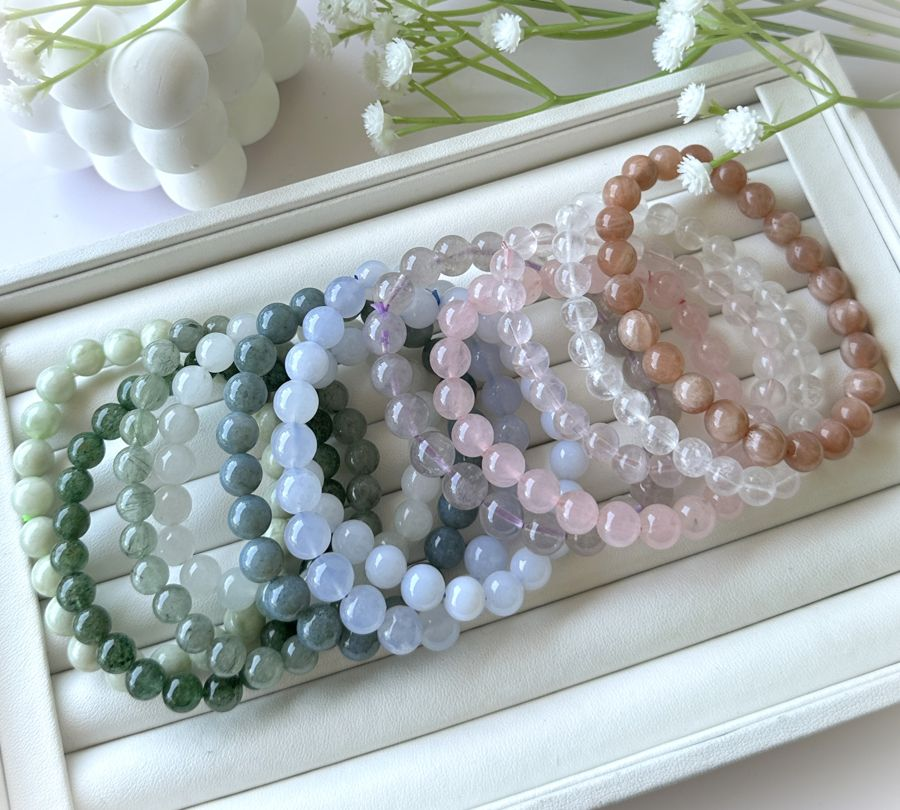
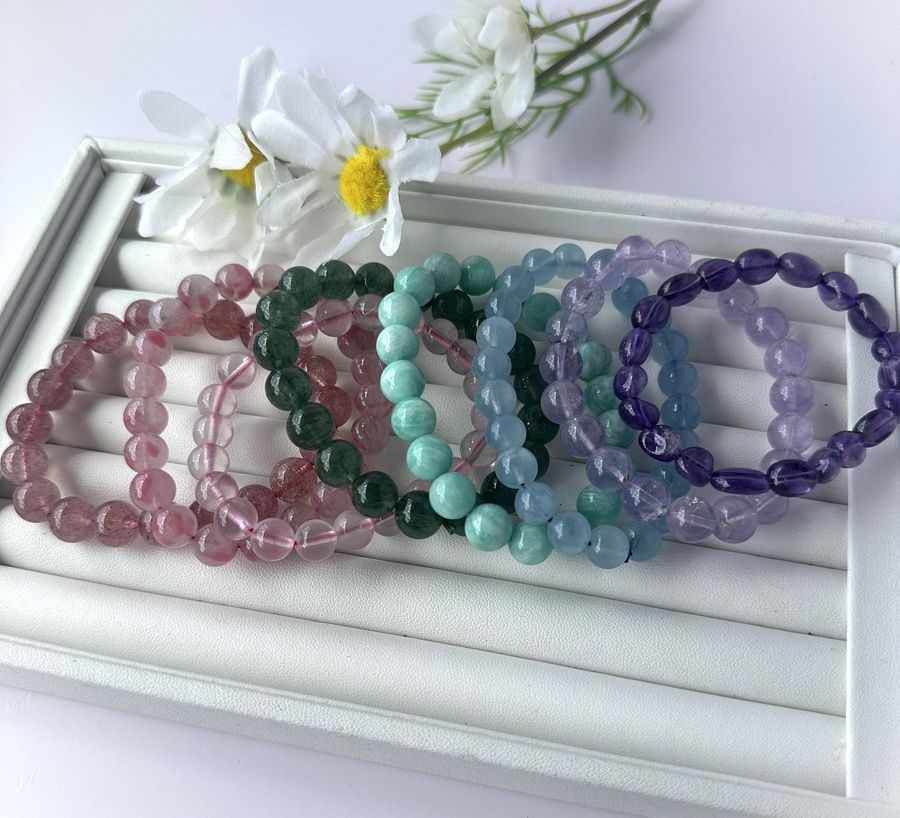
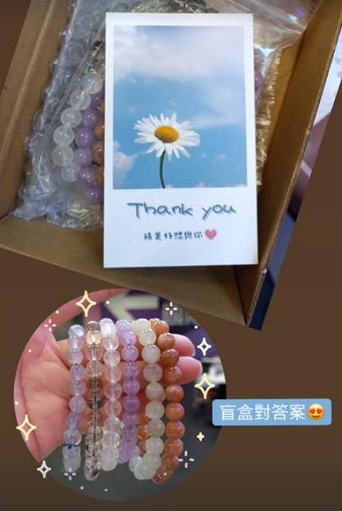
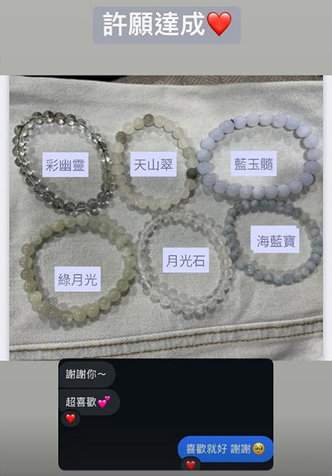
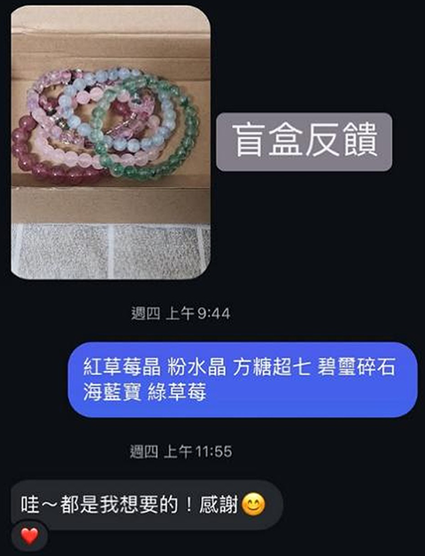
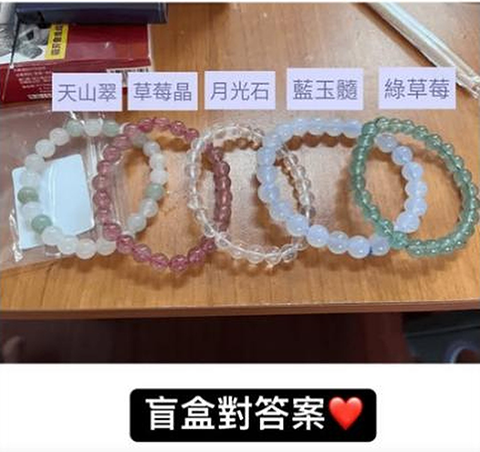
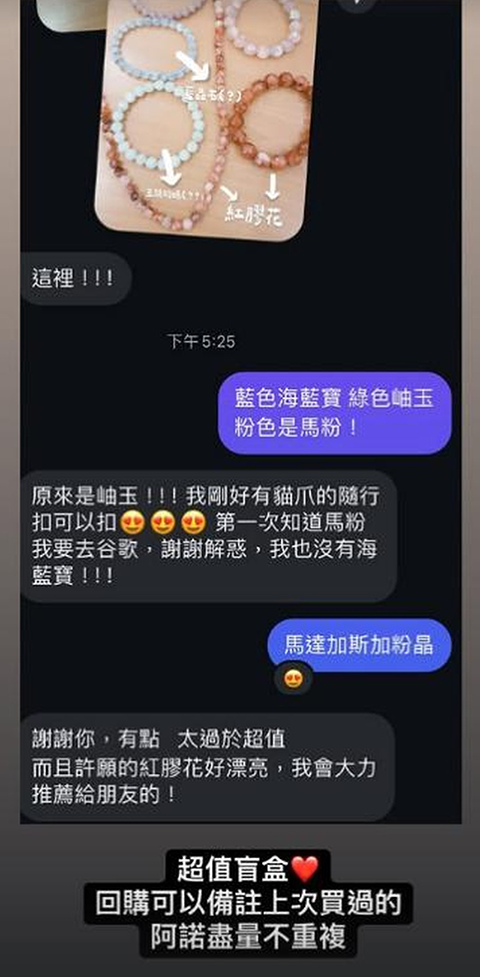
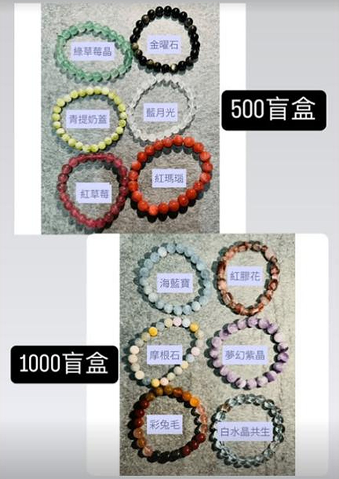
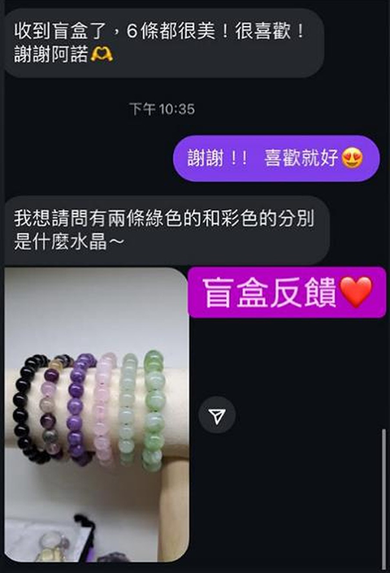

水晶盲盒 500元／5條入門款
500 元／5 條
水晶盲盒 500元一盒，共 5 條手串，適合想從不同顏色慢慢試戴的你。可以許願喜歡的色系，實際內容依現貨搭配；想指定某一條，可先看單品。
- 由阿諾搭配不同礦石手串
- 可以備註許願喜歡的色系
- 收到後可以私訊「對答案」
ANO CRYSTAL · CRYSTAL BLINDBOX
✦ 新手入門推薦！高CP值必買！還不知道自己喜歡哪種礦石？從喜歡的顏色開始，試試不同手串，慢慢找到適合日常的搭配。
阿諾水晶整理 · 更新於
一盒5條，隨機搭配，可以許願。許願不保證指定礦石或款式；照片是過往搭配參考。想挑特定的一條，建議改看精選單品。

500 元／5 條
水晶盲盒 500元一盒，共 5 條手串，適合想從不同顏色慢慢試戴的你。可以許願喜歡的色系，實際內容依現貨搭配；想指定某一條，可先看單品。

1000 元／5 條
想試試進階選物，看看這盒的搭配。
照片為款式參考，不代表每盒固定內容。價格、現貨與可選規格，請以賣場當下資訊確認。
從過往的「對答案」照片，可以看到紫水晶、薰衣草紫晶、海藍寶、月光石、粉晶、草莓晶、天河石與摩根石等不同色系手串；也有岫玉（青提奶蓋）、薔薇石（櫻花雨）等搭配紀錄。
喜歡紫色系水晶手串、淡藍色海藍寶或粉嫩手串，都可以從喜歡的顏色開始許願。每次搭配依現貨安排，想自己挑特定礦石也可以看看精選單品。
REAL UNBOXING · 客人回饋
先看看大家實際收到的手串。喜歡某個色系可以備註許願；收到後拍照私訊阿諾，一起認識是哪種礦石。點照片可開啟完整圖片。

客人開箱紀錄，收到後再一起對答案。

客人收到後回覆：「超喜歡」。

「哇～都是我想要的！感謝」——過往客人回覆。

礦石名稱標註，方便新手收到後慢慢認識。

收到後認識海藍寶、岫玉與粉晶，客人說會推薦給朋友。

過往搭配對照，照片中的條數與品項不是目前固定內容。

客人實拍與收到後的礦石詢問紀錄。
照片與回覆為過往客人開箱、許願及搭配紀錄。每盒內容依現貨搭配，照片中的礦種、條數、珠徑及過往優惠不代表目前固定內容；許願也不等於保證指定款式。
阿諾提供入門款500元／5條與進階款1000元／5條。由阿諾搭配不同礦石手串；照片為款式參考，不代表每盒固定包含照片中的手串，實際內容請先確認賣場說明。
可以在下單時備註許願色系。許願不等於保證指定礦石或款式；若有特定需求，請先LINE問阿諾確認，再決定是否下單。
盲盒手圍修改需另選加購服務。下單前請確認預設尺寸與修改費用；不確定時，先量手圍，再LINE問阿諾。
賣場標示滿600元免運，500元入門款單獨一盒未達門檻。實際運費、免運條件與優惠請依賣貨便結帳頁確認。
可以附上照片私訊阿諾「對答案」，一起認識收到的礦石與保養方式。
到7-11賣貨便選擇盲盒規格並完成下單，依平台提示登入uniopen會員。現貨、可選規格、出貨時間與售後說明，請以賣場當下資訊為準。
想自己挑款式？回到精選單品，從喜歡的顏色慢慢選 →
不知道從哪裡開始？讓阿諾幫你配
阿諾ʚ ɞ水晶 · 新手入門，收集你的第一盒 ♡
先看看大家實際收到的手串。喜歡某個色系可以備註許願；收到後拍照私訊阿諾，一起認識是哪種礦石。點照片可開啟完整圖片。
照片與回覆為過往客人開箱、許願及搭配紀錄。每盒內容依現貨搭配，照片中的礦種、條數、珠徑及過往優惠不代表目前固定內容；許願也不等於保證指定款式。
完整盲盒回饋・搭配對照 →喜歡的款式與規格，請以賣場當下資訊確認。